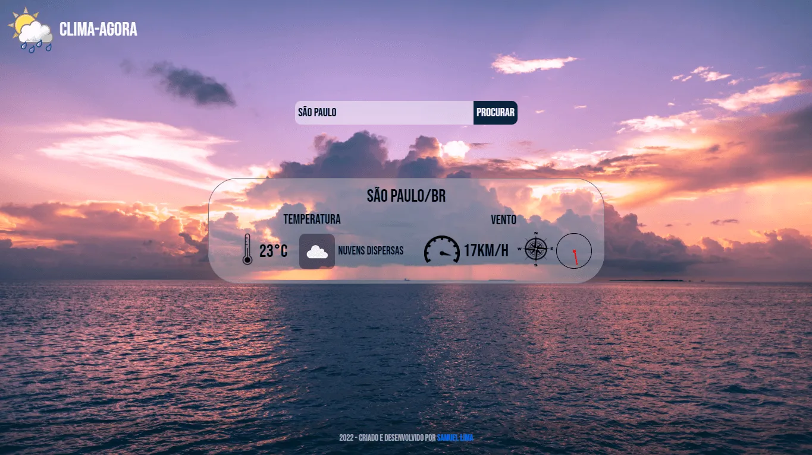

Sobre
Oi, sou o Samuel, um apaixonado por tecnologia de 24 anos. Estou sempre em busca de aprender coisas novas e me manter atualizado nas últimas tendências. Atualmente, sou bolsista no programa 'Desenvolvedor de Software' pela Cubos Academy, mergulhando no mundo da programação há cerca de 1 ano e meio. Gosto tanto do frontend quanto do backend.
Além disso, todos os dias, estou me esforçando para aprimorar meu inglês, que está entrando no nível intermediário. Meu objetivo é alcançar a fluência algum dia.
Nos momentos de lazer, aproveito a natureza, ouço música e adoro interagir com animais.
Projetos
Plataforma de anúncios
Plataforma de anúncios
Uma aplicação web desenvolvida em Node.js e TypeScript que permite aos usuários publicarem e descobrirem uma variedade de serviços. A plataforma utiliza o banco de dados MySQL para armazenar as informações dos anúncios e fornece diversas funcionalidades para facilitar a experiência dos usuários.

Site de advocacia


Site de advocacia
Este projeto é um site institucional para uma empresa de advocacia construído em HTML, CSS, JavaScript e Bootstrap. O site apresenta um design profissional fornecido pela empresa contratante e oferece informações sobre a empresa e seus serviços de forma responsiva e fácil de usar.
Site Starbucks
Site Starbucks
Eu desenvolvi um projeto para fins de estudo e prática em programação, baseado no site do Starbucks. Utilizei HTML e CSS para criar um site responsivo que apresenta informações sobre os produtos e serviços da empresa. Meu objetivo foi reproduzir o design e a funcionalidade do site original, enquanto aprimorava minhas habilidades em programação front-end.
Site Petshop
Studio de tatuagem
Desenvolvi um site para um petshop como parte de um projeto pessoal. Eu projetei o layout e utilizei HTML, CSS e javascript para implementá-lo. Foi uma ótima oportunidade para praticar minhas habilidades.
site studio de tatuagem
Studio de tatuagem
Desenvolvi um site para um estúdio de tatuagem como parte de um projeto pessoal. Eu projetei o layout e utilizei HTML, CSS e Bootstrap para implementá-lo. Adicionei algumas funcionalidades interativas com JavaScript, como um slider de imagens e animações simples. Foi uma ótima oportunidade para praticar minhas habilidades de design e programação.
_7_11zon.webp)
Clima Agora

Clima Agora
Este projeto é uma aplicação que utiliza HTML, CSS e JavaScript para buscar informações meteorológicas de uma API de terceiros. A aplicação permite que o usuário pesquise o tempo em uma determinada cidade e exibe as informações na tela.
Chat Online
Chat Online
Desenvolvi um chat geral usando Socket.io. O chat permitia que várias pessoas conversassem em tempo real e cada usuário que entrava era adicionado a uma lista de usuários online. Foi um projeto desafiador, mas extremamente gratificante. Aprendi muito sobre como usar a tecnologia de sockets para criar uma experiência de bate-papo ao vivo e fornecer uma lista atualizada de usuários online.
Desenvolvimento de Páginas Intranet
Desenvolvimento de Páginas Intranet
Desenvolvi algumas páginas internas de um site existente usando HTML, CSS e JavaScript. Meu principal objetivo foi garantir que as páginas fossem desenvolvidas de forma eficiente e escalável, enquanto mantinham a aparência e funcionalidade do site existente. Eu trabalhei em estreita colaboração com a equipe de design para garantir que as páginas refletissem fielmente a identidade visual da empresa e fornecessem uma experiência de usuário intuitiva e agradável. Além disso, utilizei as melhores práticas de codificação para garantir a manutenção fácil e a escalabilidade futura do site. Foi um projeto interessante e desafiador que me permitiu expandir minhas habilidades em desenvolvimento web.
Sistema de estoque (Frontend&Backend)
Sistema de estoque
Desenvolvi uma API completa de sistema de estoque usando Node.js, autenticação, validação, tratamento de imagem com Multer e banco de dados MySQL. Mostro como ficou em um sistema básico (sem foco no design) com Bootstrap, utilizando toda a API via JavaScript no client-side com Fetch.
Envio de emails
Envio de emails
Desenvolvi um projeto backend em Node.js utilizando a biblioteca Nodemailer para enviar e-mails de forma automatizada. Utilizei a linguagem JavaScript e apliquei os conceitos de programação assíncrona para que o envio de e-mails fosse realizado de forma eficiente. Além disso, integrei o projeto com um serviço de hospedagem em nuvem para garantir a disponibilidade do sistema. O objetivo principal foi desenvolver uma solução escalável e de fácil manutenção para envio de e-mails em massa.
Node Resumo
Node Resumo
Sou um desenvolvedor Junior com conhecimento em autenticação, integração com banco de dados, integração com express-mustache, jws passaport, criação de API's e habilidade em implementar validações